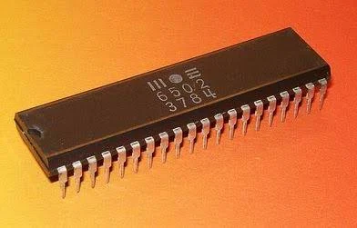

I wanted to do computer science since I was in 5th grade. I've always been interested in old technology; I looked into the basic coding language. Overtime I wanted to learn about an "modern coding langauge"; Which led me to learn ja va in high school. I never liked python, but hey I got to skip it in college; went strai ght into java!
A lot of systems at the time used a mos 6502 processor.
